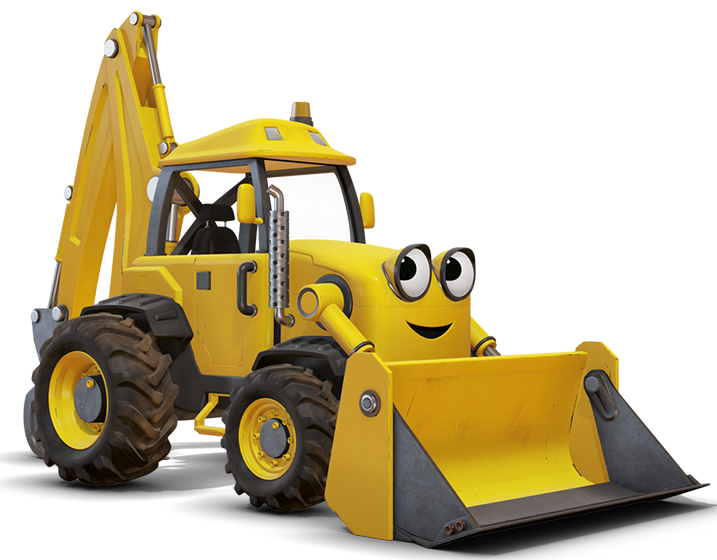

Scoop
Scoop is the leader of Bob’s machine, and he was the first one that Bob acquired. Bob chooses Scoop in the first episode; “When Bob Became A Builder”, and he does this by picking him out of a big group of backhoe diggers. Scoop is a yellow backhoe digger, which resembles a real-life machine, the JCB 3CX. His personality mirrors the traits of a natural leader, and he is the most mature of the machines.